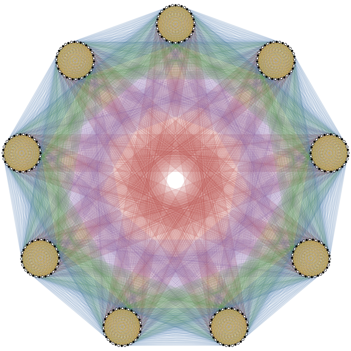

Mathematics · University of Washington
Hi, I'm Austin.
I recently finished my mathematics degree at the University of Washington. I'm interested in topological graph theory, especially graph embeddings, the genus of graphs, rotation systems, and forbidden minors. I am also interested in how people actually learn and do math.

Mathematical values
I embrace Federico Ardila-Mantilla's axioms:
- Mathematical potential is distributed equally among different groups, irrespective of geographic, demographic, and economic boundaries.
- Everyone can have joyful, meaningful, and empowering mathematical experiences.
- Mathematics is a powerful, malleable tool that can be shaped and used differently by various communities to serve their needs.
- Every student deserves to be treated with dignity and respect.
Tutoring
Math tutoring
One-on-one tutoring for advanced high school and undergraduate mathematics: calculus, linear algebra, differential equations, and proof-based courses.
→